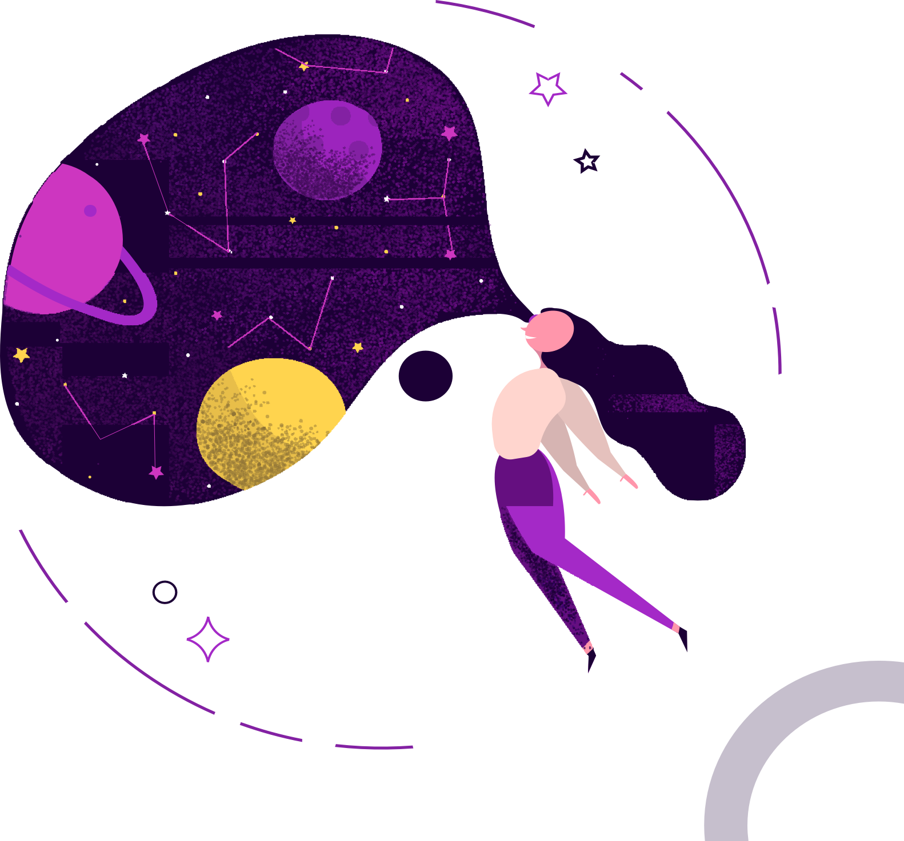

{#-
  This file was automatically generated - do not edit
  -#}
  {% extends "main.html" %}
  {% block tabs %}
  {{ super() }}
  <style>
    .md-header {
      position: initial
    }
  
    .md-main__inner {
      margin: 0
    }
  
    .md-content {
      display: none
    }
  
    @media screen and (min-width:60em) {
      .md-sidebar--secondary {
        display: none
      }
    }
  
    @media screen and (min-width:76.25em) {
      .md-sidebar--primary {
        display: none
      }
    }
  
    @media screen and (min-width: 76.25em) {
      [data-md-color-primary=white]
      .md-tabs {
        border-bottom: 0rem;
      }
    }
  </style>
  <section class="mdx-container" style="background: white;">
    <div class="md-grid md-typeset">
      <div class="mdx-hero">
        <div class="mdx-hero__image">
          
        </div>
        <div class="mdx-hero__content">
          <h1 style="color: #1C0036;font-size: 2rem;margin-top: 2rem;">VIRTUAL</h1>
          <h1 style="color: #1C0036;font-size: 3rem;">REALITY</h1>
          <p style="color: #9B8FA7;">{{ config.site_description }}</p>
          <a href="{{ page.next_page.url | url }}" title="{{ page.next_page.title | e }}"
            class="md-button md-button--primary" style="
            border-radius:2rem;
            margin-top: 2rem;
            background-color: #1C0036;
            color: white;
            border: 0px;">
            Read more
          </a>
        </div>
      </div>
    </div>
  </section>
  {% endblock %}
  {% block content %}{% endblock %}
  {% block footer %}{% endblock %}